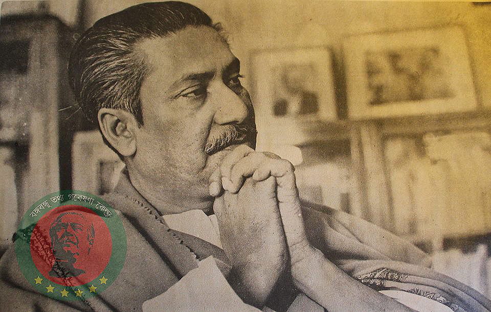

৫ জানুয়ারি ৬ দফাসহ ১১ দফা দাবি আদায়ের লক্ষ্যে কেন্দ্রীয় ছাত্র সংগ্রাম পরিষদ গঠিত হয়। কেন্দ্রীয় ছাত্র সংগ্রাম পরিষদ আগরতলা ষড়যন্ত্র মামলা প্রত্যাহার ও বঙ্গবন্ধুর মুক্তির দাবিতে দেশব্যাপী ছাত্র আন্দোলন শুরু করে। এই আন্দোলন গণআন্দোলনে পরিণত হয়। পরে ১৪৪ ধারা ও কার্ফু ভঙ্গ, পুলিশ-ইপিআর-এর গুলিবর্ষণ, বহু হতাহতের মধ্য দিয়ে গণ-অভ্যুত্থানে রূপ নিলে আইয়ুব সরকার ১ ফেব্রুয়ারি গোলটেবিল বৈঠকের আহ্বান জানায় এবং বঙ্গবন্ধুকে প্যারোলে মুক্তিদান করা হবে বলে ঘোষণা দেয়া হয়। বঙ্গবন্ধু প্যারোলে মুক্তিদান প্রত্যাখ্যান করেন। ২২ ফেব্রুয়ারি জনগণের অব্যাহত চাপের মুখে কেন্দ্রীয় সরকার আগরতলা ষড়যন্ত্র মামলা প্রত্যাহার করে বঙ্গবন্ধুসহ অন্যান্য আসামিকে মুক্তি দানে বাধ্য হয়। ২৩ ফেব্রুয়ারি রেসকোর্স (সোহরাওয়ার্দী উদ্যান) ময়দানে কেন্দ্রীয় ছাত্র সংগ্রাম পরিষদের উদ্যোগে বঙ্গবন্ধুকে সংবর্ধনার আয়োজন করা হয়। প্রায় ১০ লাখ ছাত্র জনতার এই সংবর্ধনা সমাবেশে শেখ মুজিবুর রহমানকে আনুষ্ঠানিকভাবে ‘বঙ্গবন্ধু’ উপাধিতে ভূষিত করা হয়। বঙ্গবন্ধু রেসকোর্স ময়দানের ভাষণে ছাত্র সমাজের ১১ দফা দাবির প্রতি পূর্ণ সমর্থন জানান।
১০ মার্চ বঙ্গবন্ধু রাওয়ালপিন্ডিতে আইয়ুব খানের গোলটেবিল বৈঠকে যোগদান করেন। বঙ্গবন্ধু গোলটেবিল বৈঠকে আওয়ামী লীগের ৬ দফা ও ছাত্র সমাজের ১১ দফা দাবি উপস্থাপন করে বলেন, ‘গণ-অসন্তোষ নিরসনে ৬ দফা ও ১১ দফার ভিত্তিতে আঞ্চলিক স্বায়ত্তশাসন প্রদান ছাড়া আর কোন বিকল্প নেই।’ পাকিস্তানে শাসকগোষ্ঠী ও রাজনীতিবিদরা বঙ্গবন্ধুর দাবি অগ্রাহ্য করলে ১৩ মার্চ তিনি গোলটেবিল বৈঠক ত্যাগ করেন এবং ১৪ মার্চ ঢাকায় ফিরে আসেন।

২৫ মার্চ জেনারেল ইয়াহিয়া খান সামরিক শাসন জারির মাধ্যমে ক্ষমতাসীন হন। ২৫ অক্টোবর বঙ্গবন্ধু তিন সপ্তাহের সাংগঠনিক সফরে লন্ডন গমন করেন। ৫ ডিসেম্বর শহীদ সোহরাওয়ার্দীর মৃত্যুবার্ষিকী উপলক্ষে আওয়ামী লীগের আলোচনা সভায় বঙ্গবন্ধু পূর্ব বাংলার নামকরণ করেন ‘বাংলাদেশ’। তিনি বলেন, “একসময় এদেশের বুক হইতে, মানচিত্রের পৃষ্ঠা হইতে ‘বাংলা’ কথাটির সর্বশেষ চিহ্নটুকুও চিরতরে মুছিয়া ফেলার চেষ্টা করা হইয়াছে। … একমাত্র ‘বঙ্গোপসাগর’ ছাড়া আর কোন কিছুর নামের সঙ্গে ‘বাংলা’ কথাটির অস্তিত্ব খুঁজিয়া পাওয়া যায় নাই। … জনগণের পক্ষ হইতে আমি ঘোষণা করিতেছি- আজ হইতে পাকিস্তানের পূর্বাঞ্চলীয় প্রদেশটির নাম ‘পূর্ব পাকিস্তানে’র পরিবর্তে শুধুমাত্র ‘বাংলাদেশ’।